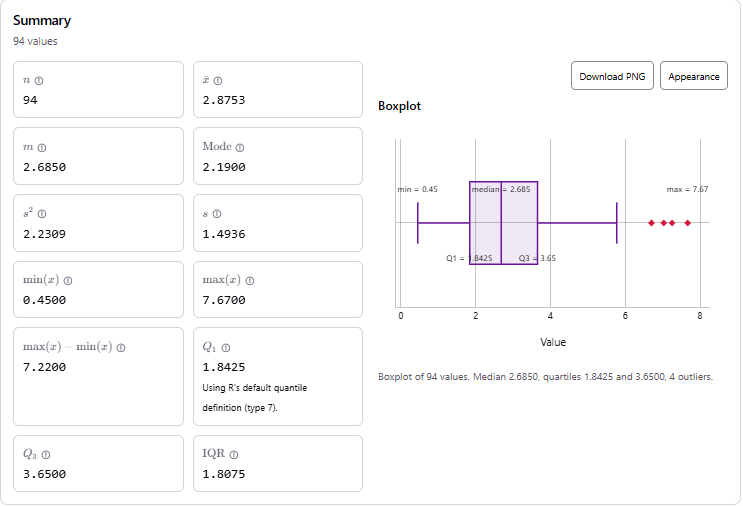
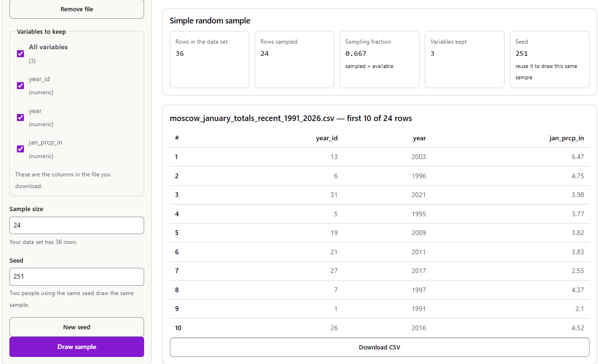
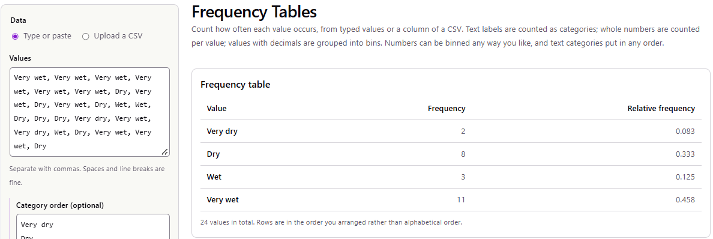
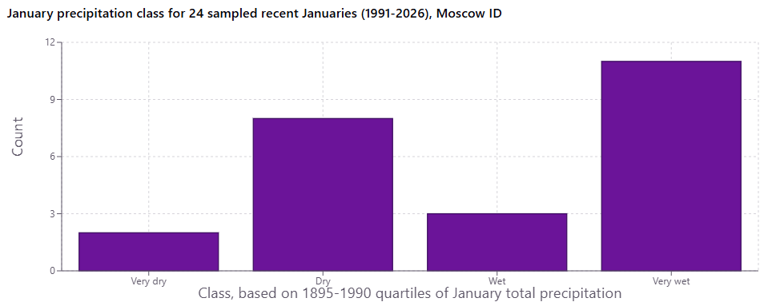
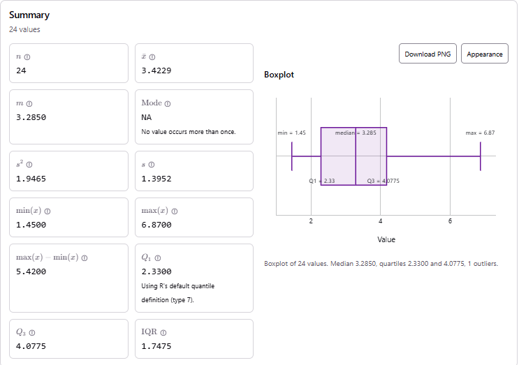
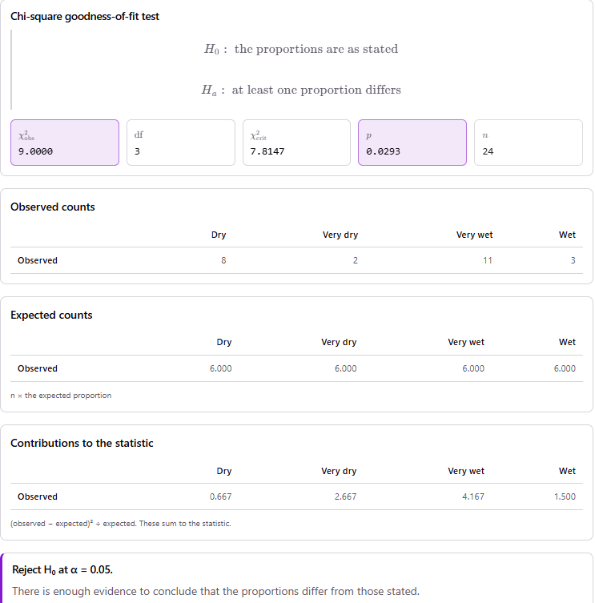

This is a completed example of the course project. It shows what a strong report looks like when the variable being analyzed is categorical. It follows the six steps on the Project Description page in order, so you can compare it against the rubric section by section. Use it to see the level of detail and explanation expected. Do not copy its dataset, question, or wording. Your project should be about a topic you choose. The example was prepared with the help of Claude (Anthropic), and every calculation in it was done with the course’s stat-tools site. The screenshots come from those tools.
(A) Citation.
Lawrimore, J. H., Ray, R., Applequist, S., Korzeniewski, B., & Menne, M. J. (2016). Global Summary of the Month (GSOM), Version 1 [Data set]. Station USC00106152, MOSCOW U OF I, ID US, monthly total precipitation (PRCP), January 1895 – January 2026. NOAA National Centers for Environmental Information. https://doi.org/10.7289/V5QV3JJ5. Accessed September 24, 2026.
Working link to the exact data I downloaded (one row per month, standard units): NCEI Access Data Service query for station USC00106152. The station’s record page is GHCND:USC00106152.
(B) Background. The data come from the weather station on the University of Idaho campus in Moscow. It is a National Weather Service Cooperative Observer (COOP) station. A trained observer reads the rain gauge by hand once a day, and the station’s record goes back to the 1890s. The daily readings are quality-checked and archived by NOAA’s National Centers for Environmental Information (NCEI). They are part of the Global Historical Climatology Network–Daily (GHCN-Daily) database. The Global Summary of the Month adds each month’s daily readings together to give a monthly total.
The original collectors did not sample anything: the station records every day, so the file is a complete record of one location, not a random sample of places. The file has one row per month. I kept only the January rows, which gives 130 usable Januaries:
(A) Question. Moscow gets much of its yearly precipitation in winter, and January is one of its wettest months. I want to know whether recent Januaries (1991–2026) are distributed across the dry-to-wet range the same way the historical Januaries (1895–1990) were. For example, is a “very wet” January more common now than it used to be?
(B) Variables.
(C) Hypothesis in words. Recent Januaries fall into the four historical precipitation classes in equal proportions (25% each), the same as the historical record. The alternative is that at least one class is more or less common now than it used to be.
I entered the 94 historical January totals into the stat-tools Statistic Calculator. It computes quartiles with R’s default (type 7) definition.

Figure 1. Statistic Calculator summary and boxplot of the 94 historical January totals (inches), 1895–1990. The quartiles set the class cutoffs.
This gives the class cutoffs Q1 = 1.8425 in, median = 2.685 in, and Q3 = 3.65 in:
| Class | January total (inches) | Share of historical Januaries |
|---|---|---|
| Very dry | less than 1.8425 | 25% |
| Dry | 1.8425 to 2.685 | 25% |
| Wet | 2.685 to 3.65 | 25% |
| Very wet | more than 3.65 | 25% |
(A) and (B) Method. My population is the 36 Januaries from 1991 to 2026. I drew a simple random sample of n = 24 Januaries without replacement, using the stat-tools Simple Random Sample tool. To repeat it:
year_id (1–36), year and
jan_prcp_in.
Figure 2. The Simple Random Sample tool after the draw: 24 of 36 rows sampled with seed 251.
(C) Justification.
Possible bias. The SRS itself is unbiased. However, my population is small, so 24 of 36 is a large fraction (67%), and my conclusions only describe 1991–2026 at this one station. A bigger worry is the station record itself. Over 130 years the gauge or its exact location may have changed. If that happened, old and new measurements may not be perfectly comparable, and no sampling method can fix that.
(D) The sample is listed in full in Appendix A.
(A) Frequency table. I classified each sampled January using Table 1 and counted the classes with the stat-tools Frequency Tables tool:
| Class | Frequency | Relative frequency |
|---|---|---|
| Very dry | 2 | 0.083 |
| Dry | 8 | 0.333 |
| Wet | 3 | 0.125 |
| Very wet | 11 | 0.458 |
| Total | 24 | 1.000 |

Figure 3. The Frequency Tables tool’s output, which matches Table 2.
The modal category is “Very wet”: 11 of the 24 Januaries (45.8%) fall in it. Under the historical pattern only 25% of Januaries would.
(B) Plots.

Figure 4. Bar chart (Make Graphs tool) of the precipitation class for the 24 sampled recent Januaries. If recent Januaries followed the historical pattern, each bar would be close to 6.
The class comes from a quantitative measurement, so I also summarized the sampled January totals themselves with the Statistic Calculator:
| Statistic | Sample (1991–2026), n = 24 | Historical (1895–1990), N = 94 |
|---|---|---|
| minimum | 1.4500 | 0.4500 |
| Q1 | 2.3300 | 1.8425 |
| median | 3.2850 | 2.6850 |
| mean | 3.4229 | 2.8753 |
| Q3 | 4.0775 | 3.6500 |
| maximum | 6.8700 | 7.6700 |
| interquartile range | 1.7475 | 1.8075 |
| standard deviation | 1.3952 | 1.4936 |

Figure 5. Statistic Calculator output and boxplot for the 24 sampled January totals (inches).
(C) Shape, center and variability.
(A) Hypotheses. Let \(p_{VD}, p_{D}, p_{W}, p_{VW}\) be the proportions of recent (1991–2026) Januaries in the Very dry, Dry, Wet and Very wet classes.
\[ H_0: p_{VD} = p_{D} = p_{W} = p_{VW} = 0.25 \] \[ H_a: \text{at least one } p_i \neq 0.25 \]
In words, \(H_0\) says recent Januaries are spread across the historical classes exactly as historical Januaries were. \(H_a\) says at least one class is now more or less common. I use a significance level of \(\alpha = 0.05\).
(B) Choice of test and assumptions. I use a \(\chi^2\) goodness-of-fit test. It compares the observed counts of a single categorical variable with the counts a stated distribution predicts, which is exactly my question. A one-proportion \(z\) test could only look at one class at a time. The assumptions are:
(C) Computations.
Step 1: observed and expected counts. The expected count for each class is \(E_i = n p_i = 24 \times 0.25 = 6\).
| Class | Observed (O) | Expected (E = 24 × 0.25) | O − E | (O − E)² / E |
|---|---|---|---|---|
| Very dry | 2 | 6 | -4 | 2.667 |
| Dry | 8 | 6 | 2 | 0.667 |
| Wet | 3 | 6 | -3 | 1.500 |
| Very wet | 11 | 6 | 5 | 4.167 |
| Total | 24 | 24 | 0 | 9.000 |
Step 2: test statistic.
\[ X^2 = \sum_{i=1}^{4} \frac{(O_i - E_i)^2}{E_i} = \frac{(2-6)^2}{6} + \frac{(8-6)^2}{6} + \frac{(3-6)^2}{6} + \frac{(11-6)^2}{6} = \frac{16 + 4 + 9 + 25}{6} = \frac{54}{6} = 9.000 \]
Step 3: degrees of freedom and critical value. There are \(k = 4\) classes, so \(df = k - 1 = 3\). The critical value is \(\chi^2_{3,\,0.95} = 7.815\), and we reject \(H_0\) if \(X^2 \geq 7.815\).
Step 4: p-value. \(p = P(\chi^2_3 \geq 9.000) = 0.0293\).
I ran the same test in the stat-tools Categorical
Tests tool. I uploaded my sample CSV, chose the
jan_class column, and set the expected proportions to 0.25,
0.25, 0.25, 0.25. The tool lists the classes alphabetically, and it
reproduces every number above:

Figure 6. Categorical Tests tool output for the goodness-of-fit test: X² = 9.0000, df = 3, critical value 7.8147, p = 0.0293.
| Quantity | Value |
|---|---|
| Test statistic \(X^2\) | 9.000 |
| Degrees of freedom | 3 |
| Critical value \(\chi^2_{3,\,0.95}\) | 7.815 |
| \(p\)-value | 0.0293 |
(A) Decision. The test statistic \(X^2 = 9.00\) is larger than the critical value 7.815. Equivalently, \(p = 0.029 < \alpha = 0.05\). So I reject \(H_0\).
(B) Interpretation. In plain language, recent Moscow Januaries do not fall into the dry-to-wet classes the way Januaries did from 1895 to 1990. The contributions in Table 4 show where the difference comes from:
In other words, the data suggest that very wet Januaries have become more common in Moscow and very dry ones less common. The quantitative summaries agree: the sample’s median January total is about 0.6 inches higher than the historical median.
One caution: the \(\chi^2\) test by itself only says the distribution changed. The “wetter” direction comes from looking at the table. The test does not tell us why the pattern changed.
(C) Limitations.
| Draw order | year_id | Year | January total (in) | Class |
|---|---|---|---|---|
| 1 | 13 | 2003 | 6.47 | Very wet |
| 2 | 6 | 1996 | 4.75 | Very wet |
| 3 | 31 | 2021 | 3.98 | Very wet |
| 4 | 5 | 1995 | 3.77 | Very wet |
| 5 | 19 | 2009 | 3.82 | Very wet |
| 6 | 21 | 2011 | 3.83 | Very wet |
| 7 | 27 | 2017 | 2.55 | Dry |
| 8 | 7 | 1997 | 4.37 | Very wet |
| 9 | 1 | 1991 | 2.10 | Dry |
| 10 | 26 | 2016 | 4.52 | Very wet |
| 11 | 4 | 1994 | 2.42 | Dry |
| 12 | 18 | 2008 | 3.06 | Wet |
| 13 | 8 | 1998 | 3.51 | Wet |
| 14 | 23 | 2013 | 2.09 | Dry |
| 15 | 36 | 2026 | 2.08 | Dry |
| 16 | 29 | 2019 | 2.37 | Dry |
| 17 | 33 | 2023 | 1.45 | Very dry |
| 18 | 30 | 2020 | 4.72 | Very wet |
| 19 | 15 | 2005 | 1.80 | Very dry |
| 20 | 20 | 2010 | 2.93 | Wet |
| 21 | 2 | 1992 | 2.67 | Dry |
| 22 | 16 | 2006 | 6.87 | Very wet |
| 23 | 14 | 2004 | 3.81 | Very wet |
| 24 | 10 | 2000 | 2.21 | Dry |
| Year: inches | Year: inches | Year: inches | Year: inches | Year: inches | Year: inches |
|---|---|---|---|---|---|
| 1895: 2.13 | 1911: 1.00 | 1928: 3.20 | 1944: 0.67 | 1960: 1.22 | 1977: 0.77 |
| 1896: 1.73 | 1912: 2.77 | 1929: 3.63 | 1945: 2.43 | 1961: 1.85 | 1978: 3.04 |
| 1897: 1.01 | 1913: 4.32 | 1930: 1.35 | 1946: 3.65 | 1962: 1.01 | 1979: 1.08 |
| 1898: 2.19 | 1914: 2.68 | 1931: 2.57 | 1947: 2.69 | 1964: 7.25 | 1980: 3.65 |
| 1899: 4.30 | 1915: 1.36 | 1932: 3.48 | 1948: 3.04 | 1965: 3.48 | 1981: 1.84 |
| 1900: 2.42 | 1916: 2.67 | 1933: 5.13 | 1949: 1.20 | 1966: 3.34 | 1982: 3.76 |
| 1901: 2.93 | 1917: 2.86 | 1934: 2.96 | 1950: 4.08 | 1967: 3.46 | 1983: 2.81 |
| 1902: 2.29 | 1918: 3.21 | 1935: 2.72 | 1951: 2.19 | 1968: 0.96 | 1984: 2.17 |
| 1903: 3.80 | 1919: 2.26 | 1936: 5.12 | 1952: 1.67 | 1969: 4.83 | 1985: 0.45 |
| 1904: 1.22 | 1920: 2.79 | 1937: 3.60 | 1953: 7.03 | 1970: 7.67 | 1986: 4.41 |
| 1905: 0.78 | 1921: 3.95 | 1938: 1.61 | 1954: 4.01 | 1971: 2.89 | 1987: 1.80 |
| 1906: 1.96 | 1922: 2.04 | 1939: 1.40 | 1955: 1.11 | 1972: 4.30 | 1988: 2.18 |
| 1907: 5.77 | 1923: 3.93 | 1940: 2.19 | 1956: 3.50 | 1973: 2.57 | 1989: 3.35 |
| 1908: 1.47 | 1924: 2.34 | 1941: 1.79 | 1957: 1.87 | 1974: 6.70 | 1990: 4.51 |
| 1909: 4.11 | 1925: 4.07 | 1942: 1.19 | 1958: 2.71 | 1975: 4.96 | |
| 1910: 2.58 | 1926: 2.04 | 1943: 2.56 | 1959: 4.77 | 1976: 1.87 |
The project requires you to disclose any AI use. This section is an illustration of the format. It is here so you can see what a complete disclosure contains. Write yours about what you actually did.